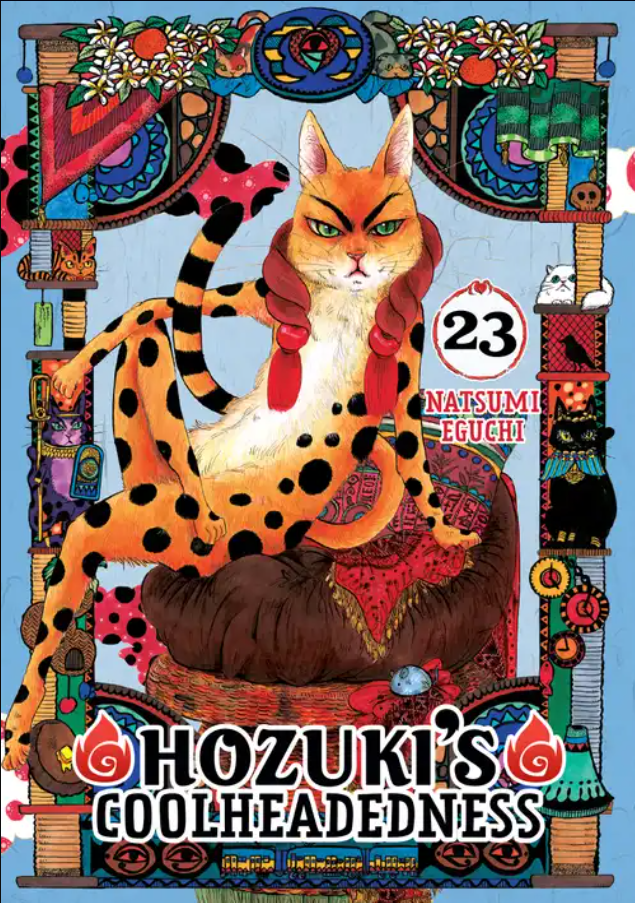

hozuki's coolheadedness
An ogre-like demon and former human Hozuki (鬼灯, Hōzuki) works as Chief of Staff under King Enma (閻魔大王, Enma-Daiō), the King and Head Judge of Hell, who determines what kind of hell the dead will be sent to. The serious-minded Hozuki attempts to manage and troubleshoot unusual problems that occur in the Japanese hell. Two of Hozuki's most prominent subordinates are Karauri (唐瓜) and Nasubi (茄子). Other characters in the underworld include Okoh (お香, Okō) the chief assistant of Mortal Hell; Mustard (芥子, Karashi), the rabbit from Kachi-kachi Yama, who acts cute but snaps when someone says Tanuki/Raccoon or acts as one; Peach Maki (ピーチ・マキ, Pīchi Maki), a famous idol in Hell and Hozuki's acquaintance; and Yoshitsune Minamoto (源義経, Minamoto no Yoshitsune), a commander in the Crow-Tengu Police. Hozuki's main rival is Hakutaku (白澤), a Chinese medicine expert who works at Shangri-La. Hakutaku is assisted by Momotarō (桃太郎), who was a famous samurai in life. Momotaro's pets Shiro (シロ) the dog, Kakisuke (柿助) the monkey, and Rurio (ルリオ) the pheasant are also regular characters in the series, working as torturers in the animal cruelty section of hell. In the second season, more characters are introduced such as the original Chief of Staff Izanami-no-Mikoto (伊邪那美命), Miki (ミキ, Miki) an Idol signed in Maki's Idol office and Hozuki's Twin Zashiki-warashi adopted daughters.